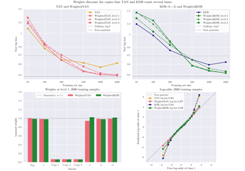

TAN#
- class skbn.TAN(root=0, n_bins=5, strategy='quantile', alpha=1.0, categorical_features=None, bernoulli_features=None, gaussian_features=None, var_prior_weight=1.0, n_jobs=None, continuous_children='gaussian')#
Tree Augmented Naive Bayes (TAN) classifier.
TAN [1] extends Naive Bayes with a tree of dependencies between the attributes: each attribute has the class and at most one other attribute as parents.
\[P(y, \mathbf{x}) = P(y) \, P(x_r \mid y) \prod_{i \neq r} P(x_i \mid y, x_{\pi(i)})\]where \(r\) is the root of the tree and \(\pi(i)\) the parent of attribute \(i\).
Structure. The tree is the maximum weight spanning tree (Chow-Liu [2]) of the complete graph whose edge weights are the empirical conditional mutual information \(I(A_i; A_j \mid C)\), directed away from
root. Continuous attributes are discretized (n_bins,strategy) to compute these weights.Parameters. Every conditional \(P(x_i \mid y, x_{\pi(i)})\) is estimated as Naive Bayes on the augmented class \(Y^* = (y, x_{\pi(i)})\), the strategy used by the AnDE family: discrete children use Laplace smoothing with
alpha, continuous children are Gaussian (shrunk towards the pooled variance withvar_prior_weight), and continuous parents are discretized. When a test instance falls in a state \((y, x_{\pi(i)})\) never observed in training, the child conditional is the uninformed estimate that Laplace smoothing gives an empty cell: uniform for discrete children, the pooled Gaussian of the attribute for continuous ones. The class prior and the root conditional are those of aMixedNBfitted on the original class.- Parameters:
- rootint, default=0
Index of the attribute used as root of the tree, in
[0, n_features - 1]. The choice does not change the learned (undirected) tree, only the direction of its edges.- n_binsint, default=5
Number of bins used to discretize continuous attributes for the structure learning and when they act as parents. Continuous children remain continuous.
- strategy{‘uniform’, ‘quantile’, ‘kmeans’, ‘mdlp’}, default=’quantile’
Strategy used for the discretization of continuous attributes.
'mdlp'places the cuts with the supervised entropy discretization of Fayyad and Irani (seeMDLPDiscretizer), which chooses the number of bins of each attribute, son_binsis not used.- alphafloat, default=1.0
Non-negative additive (Laplace/Lidstone) smoothing parameter for the discrete conditional probability tables.
- categorical_featuresarray-like of int or bool, default=None
Indices (or a boolean mask) of the features to treat as categorical, passed to
MixedNB, which describes how the undeclared features are typed.- bernoulli_featuresarray-like of int or bool, default=None
Indices (or a boolean mask) of the features to treat as Bernoulli. See
MixedNB.- gaussian_featuresarray-like of int or bool, default=None
Indices (or a boolean mask) of the features to treat as Gaussian. See
MixedNB.- var_prior_weightfloat, default=1.0
Non-negative number of pseudo-observations shrinking each Gaussian variance towards the pooled variance of the feature (see
MixedNB).- n_jobsint, default=None
Number of threads used to compute the conditional mutual information and to count and evaluate the conditionals.
Nonemeans 1 and-1all the processors.- continuous_children{“gaussian”, “discretized”}, default=”gaussian”
How a continuous attribute is modelled as a child. With
"gaussian"it keeps its values and has a Gaussian conditional, and only its role as a parent uses the bins ofn_binsandstrategy. With"discretized"every continuous attribute is replaced by its bin, as a categorical attribute, in both roles: the model on discretized data of the original works, without a discretizer in a pipeline. Values beyond the training range fall in the first or the last bin.
- Attributes:
- classes_ndarray of shape (n_classes,)
Class labels known to the classifier.
- n_features_in_int
Number of features seen during fit.
- feature_names_in_ndarray of shape (
n_features_in_,) Names of features seen during fit. Defined only when
Xhas feature names that are all strings.- conditional_mutual_info_ndarray of shape (n_features, n_features)
Empirical conditional mutual information \(I(A_i; A_j \mid C)\) (in nats) between every pair of (discretized) attributes.
- parents_ndarray of shape (n_features,)
Attribute parent of every attribute in the tree,
-1for the root.edges_list of tuple of intArcs between attributes, as
(parent, child)pairs of feature indices in the order of the children.cut_points_list of ndarray or NoneCut-points of the continuous attributes, a list with an array per attribute that the model bins (as a parent, or as a child too with
continuous_children="discretized") and None for the others.feature_types_dictIndices of the attributes of each type the model uses, under the keys “gaussian”, “categorical” and “bernoulli”.
- backoff_MixedNB
Naive Bayes on the original class. Provides the class prior, the root conditional and the detected feature types (
feature_types_).
References
[1]Friedman, N., Geiger, D., & Goldszmidt, M. (1997). Bayesian network classifiers. Machine Learning, 29(2-3), 131-163.
[2]Chow, C. K., & Liu, C. N. (1968). Approximating discrete probability distributions with dependence trees. IEEE Transactions on Information Theory, 14(3), 462-467.
Examples
>>> import numpy as np >>> from skbn import TAN >>> rng = np.random.RandomState(0) >>> y = rng.randint(0, 2, size=200) >>> x0 = rng.randint(0, 3, size=200) >>> x1 = (x0 + y) % 3 # depends on x0 and the class >>> x2 = rng.randint(0, 3, size=200) # noise >>> X = np.column_stack([x0, x1, x2]) >>> clf = TAN().fit(X, y) >>> clf.parents_.tolist() [-1, 0, 0] >>> clf.score(X, y) 1.0
Methods
conditional_table(feature[, as_frame])Return the conditional distribution of an attribute in the network.
fit(X, y)Fit the TAN classifier according to X, y.
Get metadata routing of this object.
get_params([deep])Get parameters for this estimator.
predict(X)Perform classification on an array of test vectors X.
Return log-probability estimates for the test vector X.
Return probability estimates for the test vector X.
score(X, y[, sample_weight])Return accuracy on provided data and labels.
set_params(**params)Set the parameters of this estimator.
set_score_request(*[, sample_weight])Configure whether metadata should be requested to be passed to the
scoremethod.to_dot([feature_names, class_name])Return the network in the DOT language of Graphviz.
- conditional_table(feature, as_frame=False)#
Return the conditional distribution of an attribute in the network.
The table has a row for every state of the class and of the parents of the attribute that occurs in training, with the probability of each value of the attribute, or the mean and the variance of its Gaussian. The states that do not occur have no row: there the model uses the uninformed estimate described in the class docstring.
- Parameters:
- featureint or str
The attribute, by its index or by its name in
feature_names_in_.- as_framebool, default=False
If True, return a pandas DataFrame indexed by the class and the values of the parents, with a column per value of the attribute (or the columns
meanandvar).
- Returns:
- table
Bunchor DataFrame With
as_frame=False, a dictionary-like object with:- featureint
Index of the attribute.
- parentslist of int
Its parents among the attributes.
- classesndarray of shape (n_states,)
Class of every row.
- parent_valuesndarray of shape (n_states, n_parents)
Values of the parents in every row: their categories, or the index of the bin of a continuous parent (see
cut_points_).- countndarray of shape (n_states,)
Number of training samples in the state of every row.
- feature_valuesndarray of shape (n_values,) or None
Values of a discrete attribute: its categories, or False and True for a Bernoulli attribute (above its threshold or not).
- probandarray of shape (n_states, n_values) or None
Probability of every value in every row.
- mean, varndarray of shape (n_states,) or None
Mean and variance of a Gaussian attribute in every row.
- table
Examples
>>> import numpy as np >>> from skbn import KDB >>> X = np.array([[0, 0], [0, 1], [1, 0], [1, 1]] * 5) >>> y = np.array([0, 1, 1, 0] * 5) >>> table = KDB(k=1).fit(X, y).conditional_table(1) >>> table.parents, table.classes.tolist(), table.parent_values.ravel().tolist() ([0], [0, 0, 1, 1], [0, 1, 0, 1]) >>> table.proba.round(2) array([[0.86, 0.14], [0.14, 0.86], [0.14, 0.86], [0.86, 0.14]])
- property cut_points_#
Cut-points of the continuous attributes, a list with an array per attribute that the model bins (as a parent, or as a child too with
continuous_children="discretized") and None for the others. Binbholds the values fromcut_points_[i][b - 1](included) tocut_points_[i][b], and the first and the last bin have no outer limit.
- property edges_#
Arcs between attributes, as
(parent, child)pairs of feature indices in the order of the children. Every attribute also has the class as a parent, which the pairs leave out.
- property feature_types_#
Indices of the attributes of each type the model uses, under the keys “gaussian”, “categorical” and “bernoulli”.
- fit(X, y)#
Fit the TAN classifier according to X, y.
Learns the tree structure from the conditional mutual information between attributes and estimates the conditional probability tables by counting frequencies.
- Parameters:
- Xarray-like of shape (n_samples, n_features)
Training vectors.
- yarray-like of shape (n_samples,)
Target values.
- Returns:
- selfobject
Returns the instance itself.
- get_metadata_routing()#
Get metadata routing of this object.
Please check User Guide on how the routing mechanism works.
- Returns:
- routingMetadataRequest
A
MetadataRequestencapsulating routing information.
- get_params(deep=True)#
Get parameters for this estimator.
- Parameters:
- deepbool, default=True
If True, will return the parameters for this estimator and contained subobjects that are estimators.
- Returns:
- paramsdict
Parameter names mapped to their values.
- predict(X)#
Perform classification on an array of test vectors X.
- Parameters:
- Xarray-like of shape (n_samples, n_features)
The input samples.
- Returns:
- Cndarray of shape (n_samples,)
Predicted target values for X.
- predict_log_proba(X)#
Return log-probability estimates for the test vector X.
- Parameters:
- Xarray-like of shape (n_samples, n_features)
The input samples.
- Returns:
- Carray-like of shape (n_samples, n_classes)
Returns the log-probability of the samples for each class.
- predict_proba(X)#
Return probability estimates for the test vector X.
- Parameters:
- Xarray-like of shape (n_samples, n_features)
The input samples.
- Returns:
- Carray-like of shape (n_samples, n_classes)
Returns the probability of the samples for each class.
- score(X, y, sample_weight=None)#
Return accuracy on provided data and labels.
In multi-label classification, this is the subset accuracy which is a harsh metric since you require for each sample that each label set be correctly predicted.
- Parameters:
- Xarray-like of shape (n_samples, n_features)
Test samples.
- yarray-like of shape (n_samples,) or (n_samples, n_outputs)
True labels for
X.- sample_weightarray-like of shape (n_samples,), default=None
Sample weights.
- Returns:
- scorefloat
Mean accuracy of
self.predict(X)w.r.t.y.
- set_params(**params)#
Set the parameters of this estimator.
The method works on simple estimators as well as on nested objects (such as
Pipeline). The latter have parameters of the form<component>__<parameter>so that it’s possible to update each component of a nested object.- Parameters:
- **paramsdict
Estimator parameters.
- Returns:
- selfestimator instance
Estimator instance.
- set_score_request(*, sample_weight: bool | None | str = '$UNCHANGED$') TAN#
Configure whether metadata should be requested to be passed to the
scoremethod.Note that this method is only relevant when this estimator is used as a sub-estimator within a meta-estimator and metadata routing is enabled with
enable_metadata_routing=True(seesklearn.set_config()). Please check the User Guide on how the routing mechanism works.The options for each parameter are:
True: metadata is requested, and passed toscoreif provided. The request is ignored if metadata is not provided.False: metadata is not requested and the meta-estimator will not pass it toscore.None: metadata is not requested, and the meta-estimator will raise an error if the user provides it.str: metadata should be passed to the meta-estimator with this given alias instead of the original name.
The default (
sklearn.utils.metadata_routing.UNCHANGED) retains the existing request. This allows you to change the request for some parameters and not others.Added in version 1.3.
- Parameters:
- sample_weightstr, True, False, or None, default=sklearn.utils.metadata_routing.UNCHANGED
Metadata routing for
sample_weightparameter inscore.
- Returns:
- selfobject
The updated object.
- to_dot(feature_names=None, class_name='class')#
Return the network in the DOT language of Graphviz.
The text can be rendered with Graphviz or read by the libraries that take DOT, such as
networkxandpydot. The attributes the model ignores (constant in training) are left out.- Parameters:
- feature_namesarray-like of str of shape (n_features,), default=None
Names of the attributes. By default
feature_names_in_, orx0,x1, … when the model was fitted without names.- class_namestr, default=”class”
Name of the class node.
- Returns:
- dotstr
A
digraphwith an arc from the class to every attribute and the arcs ofedges_.
Examples using skbn.TAN#

Tutorial: from a table of labels to a fitted network


Weighted TAN and KDB on duplicated attributes

A table of continuous measurements: what to expect